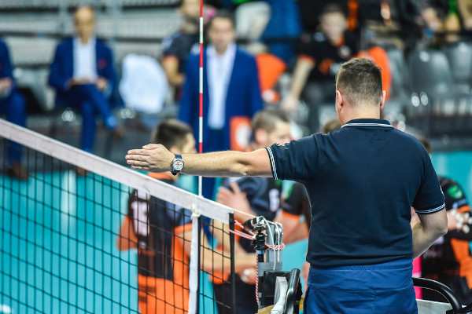

Regras do voleibol

"Faltas no vôlei"
Saiba quais jogadas e ações são consideradas faltas no vôlei:
-
"Dois toques: quando o jogador toca duas vezes na bola ou ela toca em partes de seu corpo (duas vezes, sem continuar o contato)."
-
"De posição: quando o jogador não ocupa corretamente sua posição na quadra."
-
"De rotação: quando o saque não é feito de acordo com a ordem correta definida pela rotação."
-
"Quatro toques: quando a equipe realiza quatro toques antes de encaminhar a bola para o outro campo."
-
"Toque apoiado: quando o jogador se apoia em outro membro de sua equipe, ou quando ele se apoia em alguma estrutura do jogo ou objeto."
-
"Condução: quando a bola é retida ou lançada, isto é, ela não é rebatida pelo toque do jogador."
-
"Rede: quando o jogador toca a rede."
Evolução das regras de vôlei
As mudanças nas regras se relacionam diretamente com a espetacularização do esporte. Esse fenômeno é caracterizado pela disseminação do vôlei por meio dos veículos de comunicação, por exemplo, a televisão e a internet.
A atualização das regras é fundamental para que a prática esportiva se mantenha atrativa, tanto para jogadores quanto para os espectadores e, consequentemente, para o setor comercial e os diretores das equipes profissionais.
Uma das mudanças que impactaram o esporte foi a criação da posição do líbero, em 1998. A novidade foi incluída no vôlei, pois o esporte se caracterizava por ataques eficientes, entretanto, carecia de ferramentas de defesa. Nesse sentido, o jogador líbero passou a atuar exclusivamente na assistência e defesa durante as partidas.
| Fundamentos do voleibol |
| Saque |
| Toque ou levantamento |
| Manchete |
| Ataque |
| Defesa |
| Bloqueio |
Saque
O saque é definido quando a bola é colocada em jogo. Há diversos tipos de saques, entre eles:
- saque por baixo;
- saque por cima;
- saque viagem
- saque flutuante
Há saques com e sem a realização de saltos.
Toque ou levantamento
O toque é um fundamento técnico utilizado em diversas situações no jogo, tais como: recepção, ataque e levantamento.
Manchete
A manchete é utilizada em situações de recepção de saque, levantamento e defesa, sendo mais comum nas recepções.
Os jogadores devem aplicar uma postura corporal adequada para realizar a manchete, já que essa posição influencia na direção da bola.
Ataque
O ataque no vôlei é composto por ações de passadas de pernas, movimentação de braços e saltos.
A tática do ataque é crucial, já que ele é muito importante na marcação de pontos.
Defesa
A defesa no voleibol é caracterizada por ações técnicas que garantem a manutenção da bola no jogo e possibilitam o contra-ataque.
Bloqueio
O bloqueio faz parte do sistema defensivo do voleibol. A ação é feita por dois jogadores ou mais que ficam próximos à rede na intenção de bloquear a bola.
Voltar